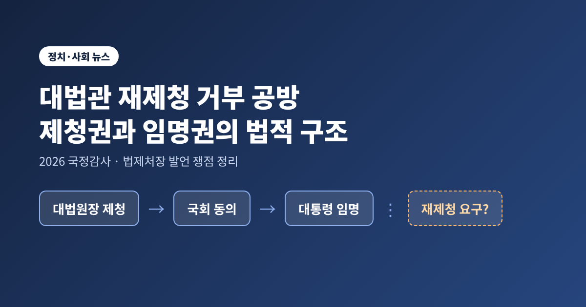
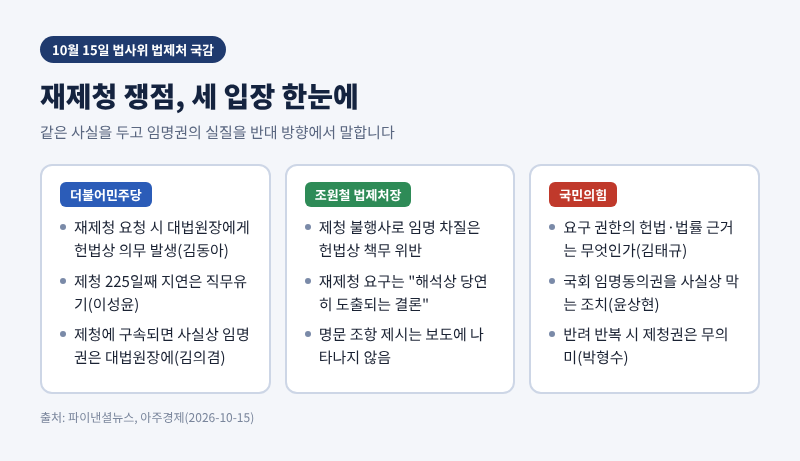
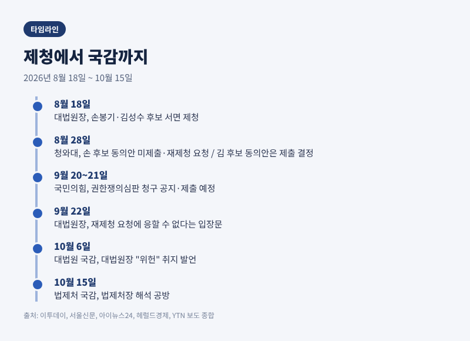
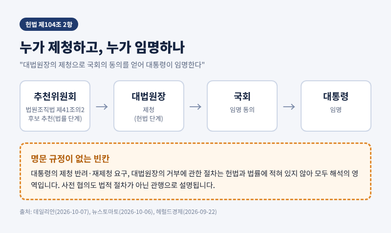
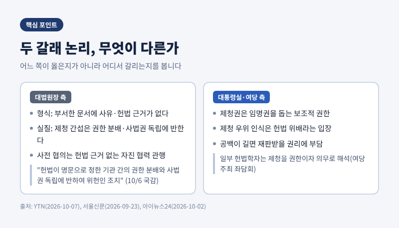
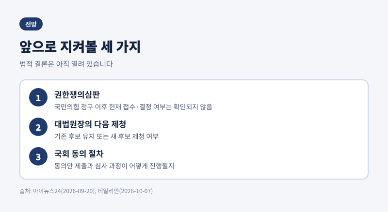

대법관 재제청 거부 공방, 법제처장 발언으로 본 제청권과 임명권의 법적 구조

3줄 요약
- 10월 15일 국회 법사위 법제처 국정감사에서 '대법관 재제청'을 두고 여야가 맞붙었습니다.
- 조원철 법제처장은 제청을 하지 않아 임명이 이뤄지지 않는 것은 "헌법상 책무"를 다하지 않은 것이라는 취지로 답했고, 국민의힘은 "독단적 해석"이라고 반발했습니다.
- 핵심은 헌법 제104조가 말하지 않는 빈칸, 곧 대통령이 재제청을 요구할 수 있는지와 대법원장이 이에 응할 의무가 있는지입니다.
이번 글에서는 이 공방의 감정적 대립보다 법적 구조를 정리해 보겠습니다. 누가 제청하고 누가 임명하는지, 거부의 근거는 무엇인지, 법제처장의 해석이 어디에 놓이는지를 순서대로 살펴봅니다. 앞서 다룬 대법원 국감 선서 거부 논란과는 별개로, 재제청 쟁점에만 집중합니다.
10월 15일 법제처 국감에서 무슨 일이 있었나
2026년 10월 15일 국회 법제사법위원회의 법제처 국정감사에서 대법관 재제청 문제가 다시 불거졌습니다. 더불어민주당 김동아 의원은 대통령이 재제청을 요청했다면 대법원장에게 헌법상 의무가 생긴다고 주장했습니다. 이성윤 의원은 대법관 제청이 225일째 이뤄지지 않고 있다며 직무유기라고 비판했습니다.
조원철 법제처장의 답변이 논란의 중심이 됐습니다. 파이낸셜뉴스와 아주경제 보도를 종합하면, 법제처장은 제청권이 행사되지 않아 대법관 임명이 이뤄지지 않고 대법원 운영에 차질이 생기는 상황을 헌법상 책무를 다하지 않은 것으로 보았습니다. 대통령이 재제청을 요구할 수 있는 근거를 묻는 질의에는 법령의 명문 조항을 대는 대신 "해석상 당연히 도출되는 결론"이라고 답했습니다.
국민의힘은 즉각 반발했습니다. 김태규 의원은 그 근거가 헌법과 법률 어디에 있느냐고 물으며 법제처장의 답변을 "독단적 해석"이라고 불렀습니다. 윤상현 의원은 재제청 요구가 국회의 임명동의권을 사실상 가로막는 것이라고 주장했습니다. 박형수 의원은 대통령이 원하는 인물이 제청될 때까지 반려한다면 제청권이 의미를 잃는다고 지적했습니다.
민주당 김의겸 의원의 반론도 눈에 띕니다. 대법원장의 제청에 대통령이 반드시 따라야 한다면 사실상의 임명권은 대법원장이 갖게 된다는 것입니다. 같은 사실을 두고 양쪽이 서로 반대 방향에서 '임명권의 실질'을 말하고 있는 셈입니다.

이 공방이 왜 중요한가
대법관은 대법원 판결의 최종 결론을 내리는 자리입니다. 청와대는 노태악 전 대법관 퇴임 후 6개월이 지났고 대법관 1인당 연간 3,500~4,600건을 처리하는 만큼 공백이 재판받을 권리에 영향을 줄 수 있다고 주장해 왔습니다. 다만 한 자리가 비었다고 전원합의체 심리가 불가능해지는 것은 아니라는 설명도 있습니다. 공백의 무게를 어떻게 평가할지는 입장에 따라 다릅니다.
더 근본적인 문제는 삼권의 권한 배분입니다. 대통령이 후보를 반려하고 다시 내라고 요구할 수 있다면 인사에서 행정부의 영향력이 커집니다. 반대로 대법원장이 요구를 거절할 수 있다면 대통령의 임명권이 얼마나 실질적인지가 문제로 남습니다. 그래서 이 사안은 특정 후보 한 사람의 임명을 넘어 제도 해석의 선례가 됩니다.
경위: 8월 제청부터 10월 국감까지
사건의 흐름을 날짜순으로 보면 이해가 쉽습니다.
- 8월 18일: 조희대 대법원장이 노태악 전 대법관 후임으로 손봉기 대구지법 부장판사를, 이흥구 대법관 후임으로 김성수 서울고법 부장판사를 서면 제청했습니다. 청와대는 사전 협의가 없었다고 보았습니다.
- 8월 28일: 청와대가 손봉기 후보의 임명동의안을 국회에 내지 않기로 하고 재제청을 요청했습니다. 김성수 후보 동의안은 같은 날 제출하기로 했습니다. 이후 김 후보는 9월 21일 임명장을 받았습니다.
- 9월 20~21일: 국민의힘이 임명동의안 미제출과 재제청 요구가 국회의 동의권을 침해했다며 헌법재판소에 권한쟁의심판을 청구하겠다고 밝혔습니다.
- 9월 22일: 조 대법원장이 재제청 요청에 응할 수 없다는 입장문을 냈습니다.
- 10월 6일: 법사위 대법원 국감에서 조 대법원장이 같은 입장을 다시 밝혔습니다.
- 10월 15일: 법제처 국감에서 법제처장의 해석을 둘러싼 공방이 벌어졌습니다.
재제청 요청의 세부 내용은 보도마다 조금 다릅니다. 손 후보를 다시 제청하되 추천위 추천을 존중해 달라는 요구로 전한 매체가 있고, 손 후보를 제외하고 다시 제청하라는 요구로 전한 매체도 있습니다. 이 글은 '사실상 반려 후 재제청 요청'이라는 공통분모만 사용합니다.

법적 구조: 누가 제청하고 누가 임명하는가
헌법 제104조 2항은 대법관을 "대법원장의 제청으로 국회의 동의를 얻어 대통령이 임명한다"고 정합니다. 세 기관이 순서대로 관여하는 구조입니다. 대법원장이 후보를 제청하고, 국회가 동의하고, 대통령이 임명합니다.
법원조직법 제41조의2는 대법원에 대법관후보추천위원회를 두어 대법원장의 제청 대상자를 추천하게 합니다. 헌법에는 없고 법률에 있는 단계입니다. 청와대는 이 법이 추천 내용을 존중하도록 정한다고 주장하고, 대법원장 측은 추천위 결과에 구속되지 않는다는 입장입니다.
문제는 헌법과 법률 어디에도 대통령이 제청을 반려하거나 재제청을 요구하는 절차가 적혀 있지 않다는 점입니다. 거부할 수 있는지, 요구할 수 있는지 모두 해석의 영역입니다. 언론도 이를 헌법의 빈칸으로 정리했습니다.

거부의 근거와 법제처 해석, 양쪽의 논리
대법원장의 거부 논리는 두 갈래입니다. 하나는 형식입니다. 대통령의 국법상 행위는 국무총리와 관계 국무위원이 부서한 문서로 해야 하는데, 8월 28일자 요청 문서에는 구체적 사유와 헌법적 근거가 적혀 있지 않다는 것입니다. 다른 하나는 실질입니다. 10월 6일 국감에서 조 대법원장은 대법원장의 제청에 간섭하는 것은 권한 분배와 사법권 독립에 반하여 위헌이라고 말했습니다. 사전 협의에 대해서는 "헌법의 근거는 없지만" 자진해 협력해 온 관행이라고 설명했습니다.
대통령실과 여당의 논리는 다릅니다. 제청권은 임명권을 돕는 권한이므로 이를 임명권 위에 둘 수 없다는 것입니다. 민주당이 연 좌담회에서는 일부 헌법학자들이 제청을 권한이자 의무로 보고, 재제청 요구 시 다시 제청할 의무가 생긴다는 견해를 내놓았습니다. 다만 이는 여당 주최 자리의 견해이며, 같은 자리의 다른 참석자는 무조건 임명해야 한다고 보기는 어렵다고 했습니다.
신중론도 있습니다. 한상희 건국대 교수는 헌법이 열어 둔 사항은 입법이 정하며 사법부가 그 취지를 존중해야 한다고 보았습니다. 한 변호사는 사유 없는 반려는 제청권을 종속시킬 수 있지만, 중대한 결격 사유가 있다면 임명권의 본질에 포함될 여지도 있다고 짚었습니다.
법제처장의 위치는 이렇습니다. 정부 법령 해석을 맡는 기관의 장이 여당 논리에 가까운 답을 했고, 국민의힘은 해석의 근거와 중립성을 문제 삼았습니다. 법제처장 해석은 행정부의 입장이지 사법부를 구속하는 유권해석이 아니라는 점은 분명히 해 둘 필요가 있습니다. 최종 판단은 헌법재판소의 몫일 수 있습니다.

전망과 남은 질문
앞으로 볼 지점은 셋입니다. 첫째, 국민의힘이 청구하겠다고 밝힌 권한쟁의심판의 진행입니다. 접수와 결정 여부는 이번 조사에서 확인하지 못했습니다. 둘째, 대법원장이 기존 후보를 유지할지, 새 후보를 제청할지입니다. 셋째, 국회가 동의 절차를 어떻게 다룰지입니다.

양측 모두 헌법 제104조의 침묵을 자신에게 유리하게 읽고 있습니다. 한쪽은 대통령의 임명권이 실질을 가져야 한다고 하고, 다른 쪽은 사법권 독립이 제청권에 담겨 있다고 합니다. 두 주장 모두 헌법의 가치에 닿아 있다는 점에서 단순히 한쪽이 옳다고 말하기는 어렵습니다.
정리하면 이렇습니다. 이 논쟁에서 지금 확정된 것은 사실관계와 입장의 차이뿐이고, 법적 결론은 아직 열려 있습니다.
제도의 빈칸은 결국 제도로 메워야 합니다. 공석이 길어질수록 그 비용은 재판을 기다리는 시민에게 돌아갑니다. 다음 국면에서 어떤 절차가 먼저 움직일지 차분히 지켜보시길 권합니다.
※ 이 글은 2026년 10월 15~16일까지의 언론 보도를 바탕으로 정리했으며, 법적 판단이 아닌 쟁점 해설입니다. 주요 출처: 파이낸셜뉴스, 아주경제, 뉴스1, 이투데이, 서울신문, 아이뉴스24, 헤럴드경제, YTN, 뉴스토마토, 데일리안.